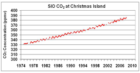

Data
Data Analysis and Interpretation
Did you know?
Did you know that scientists don't always agree on what data mean? Different scientists can look at the same set of data and come up with different explanations for it, and disagreement among scientists doesn't point to bad science.
Before you decide what to wear in the morning, you collect a variety of data: the season of the year, what the forecast says the weather is going to be like, which clothes are clean and which are dirty, and what you will be doing during the day. You then analyze those data. Perhaps you think, "It's summer, so it's usually warm." That analysis helps you determine the best course of action, and you base your apparel decision on your interpretation of the information. You might choose a t-shirt and shorts on a summer day when you know you'll be outside, but bring a sweater with you if you know you'll be in an air-conditioned building.
Though this example may seem simplistic, it reflects the way scientists pursue data collection, analysis, and interpretation. Data (the plural form of the word datum) are scientific observations and measurements that, once analyzed and interpreted, can be developed into evidence to address a question. Data lie at the heart of all scientific investigations, and all scientists collect data in one form or another. The weather forecast that helped you decide what to wear, for example, was an interpretation made by a meteorologist who analyzed data collected by satellites. Data may take the form of the number of bacteria colonies growing in soup broth (see our Experimentation in Science module), a series of drawings or photographs of the different layers of rock that form a mountain range (see our Description in Science module), a tally of lung cancer victims in populations of cigarette smokers and non-smokers (see our Comparison in Science module), or the changes in average annual temperature predicted by a model of global climate (see our Modeling in Science module).
Scientific data collection involves more care than you might use in a casual glance at the thermometer to see what you should wear. Because scientists build on their own work and the work of others, it is important that they are systematic and consistent in their data collection methods and make detailed records so that others can see and use the data they collect.
But collecting data is only one step in a scientific investigation, and scientific knowledge is much more than a simple compilation of data points. The world is full of observations that can be made, but not every observation constitutes a useful piece of data. For example, your meteorologist could record the outside air temperature every second of the day, but would that make the forecast any more accurate than recording it once an hour? Probably not. All scientists make choices about which data are most relevant to their research and what to do with those data: how to turn a collection of measurements into a useful dataset through processing and analysis, and how to interpret those analyzed data in the context of what they already know. The thoughtful and systematic collection, analysis, and interpretation of data allow them to be developed into evidence that supports scientific ideas, arguments, and hypotheses.
Data collection, analysis, and interpretation: Weather and climate
The weather has long been a subject of widespread data collection, analysis, and interpretation. Accurate measurements of air temperature became possible in the mid-1700s when Daniel Gabriel Fahrenheit invented the first standardized mercury thermometer in 1714 (see our Temperature module). Air temperature, wind speed, and wind direction are all critical navigational information for sailors on the ocean, but in the late 1700s and early 1800s, as sailing expeditions became common, this information was not easy to come by. The lack of reliable data was of great concern to Matthew Fontaine Maury, the superintendent of the Depot of Charts and Instruments of the US Navy. As a result, Maury organized the first international Maritime Conference, held in Brussels, Belgium, in 1853. At this meeting, international standards for taking weather measurements on ships were established and a system for sharing this information between countries was founded.
Defining uniform data collection standards was an important step in producing a truly global dataset of meteorological information, allowing data collected by many different people in different parts of the world to be gathered together into a single database. Maury's compilation of sailors' standardized data on wind and currents is shown in Figure 1. The early international cooperation and investment in weather-related data collection has produced a valuable long-term record of air temperature that goes back to the 1850s.
This vast store of information is considered "raw" data: tables of numbers (dates and temperatures), descriptions (cloud cover), location, etc. Raw data can be useful in and of itself – for example, if you wanted to know the air temperature in London on June 5, 1801. But the data alone cannot tell you anything about how temperature has changed in London over the past two hundred years, or how that information is related to global-scale climate change. In order for patterns and trends to be seen, data must be analyzed and interpreted first. The analyzed and interpreted data may then be used as evidence in scientific arguments, to support a hypothesis or a theory.
Good data are a potential treasure trove – they can be mined by scientists at any time – and thus an important part of any scientific investigation is accurate and consistent recording of data and the methods used to collect those data. The weather data collected since the 1850s have been just such a treasure trove, based in part upon the standards established by Matthew Maury. These standards provided guidelines for data collections and recording that assured consistency within the dataset. At the time, ship captains were able to utilize the data to determine the most reliable routes to sail across the oceans. Many modern scientists studying climate change have taken advantage of this same dataset to understand how global air temperatures have changed over the recent past. In neither case can one simply look at the table of numbers and observations and answer the question – which route to take, or how global climate has changed. Instead, both questions require analysis and interpretation of the data.
Comprehension Checkpoint
Data are most valuable when they are collected
Data analysis: A complex and challenging process
Though it may sound straightforward to take 150 years of air temperature data and describe how global climate has changed, the process of analyzing and interpreting those data is actually quite complex. Consider the range of temperatures around the world on any given day in January (see Figure 2): In Johannesburg, South Africa, where it is summer, the air temperature can reach 35° C (95° F), and in Fairbanks, Alaska at that same time of year, it is the middle of winter and air temperatures might be -35° C (-31° F). Now consider that over huge expanses of the ocean, where no consistent measurements are available. One could simply take an average of all of the available measurements for a single day to get a global air temperature average for that day, but that number would not take into account the natural variability within and uneven distribution of those measurements.
Defining a single global average temperature requires scientists to make several decisions about how to process all of those data into a meaningful set of numbers. In 1986, climatologists Phil Jones, Tom Wigley, and Peter Wright published one of the first attempts to assess changes in global mean surface air temperature from 1861 to 1984 (Jones, Wigley, & Wright, 1986). The majority of their paper – three out of five pages – describes the processing techniques they used to correct for the problems and inconsistencies in the historical data that would not be related to climate. For example, the authors note:
Early SSTs [sea surface temperatures] were measured using water collected in uninsulated, canvas buckets, while more recent data come either from insulated bucket or cooling water intake measurements, with the latter considered to be 0.3-0.7° C warmer than uninsulated bucket measurements.
Correcting for this bias may seem simple, just adding ~0.5° C to early canvas bucket measurements, but it becomes more complicated than that because, the authors continue, the majority of SST data do not include a description of what kind of bucket or system was used.
Similar problems were encountered with marine air temperature data. Historical air temperature measurements over the ocean were taken aboard ships, but the type and size of ship could affect the measurement because size "determines the height at which observations were taken." Air temperature can change rapidly with height above the ocean. The authors therefore applied a correction for ship size in their data. Once Jones, Wigley, and Wright had made several of these kinds of corrections, they analyzed their data using a spatial averaging technique that placed measurements within grid cells on the Earth's surface in order to account for the fact that there were many more measurements taken on land than over the oceans.
Developing this grid required many decisions based on their experience and judgment, such as how large each grid cell needed to be and how to distribute the cells over the Earth. They then calculated the mean temperature within each grid cell, and combined all of these means to calculate a global average air temperature for each year. Statistical techniques such as averaging are commonly used in the research process and can help identify trends and relationships within and between datasets (see our Statistics in Science module). Once these spatially averaged global mean temperatures were calculated, the authors compared the means over time from 1861 to 1984.
A common method for analyzing data that occur in a series, such as temperature measurements over time, is to look at anomalies, or differences from a pre-defined reference value. In this case, the authors compared their temperature values to the mean of the years 1970-1979 (see Figure 3). This reference mean is subtracted from each annual mean to produce the jagged lines in Figure 3, which display positive or negative anomalies (values greater or less than zero). Though this may seem to be a circular or complex way to display these data, it is useful because the goal is to show change in mean temperatures rather than absolute values.
Putting data into a visual format can facilitate additional analysis (see our Using Graphs and Visual Data module). Figure 3 shows a lot of variability in the data: There are a number of spikes and dips in global temperature throughout the period examined. It can be challenging to see trends in data that have so much variability; our eyes are drawn to the extreme values in the jagged lines like the large spike in temperature around 1876 or the significant dip around 1918. However, these extremes do not necessarily reflect long-term trends in the data.
In order to more clearly see long-term patterns and trends, Jones and his co-authors used another processing technique and applied a filter to the data by calculating a 10-year running average to smooth the data. The smooth lines in the graph represent the filtered data. The smooth line follows the data closely, but it does not reach the extreme values.
Data processing and analysis are sometimes misinterpreted as manipulating data to achieve the desired results, but in reality, the goal of these methods is to make the data clearer, not to change it fundamentally. As described above, in addition to reporting data, scientists report the data processing and analysis methods they use when they publish their work (see our Understanding Scientific Journals and Articles module), allowing their peers the opportunity to assess both the raw data and the techniques used to analyze them.
Data interpretation: Uncovering and explaining trends in the data
The analyzed data can then be interpreted and explained. In general, when scientists interpret data, they attempt to explain the patterns and trends uncovered through analysis, bringing all of their background knowledge, experience, and skills to bear on the question and relating their data to existing scientific ideas. Given the personal nature of the knowledge they draw upon, this step can be subjective, but that subjectivity is scrutinized through the peer review process (see our Peer Review in Science module). Based on the smoothed curves, Jones, Wigley, and Wright interpreted their data to show a long-term warming trend. They note that the three warmest years in the entire dataset are 1980, 1981, and 1983. They do not go further in their interpretation to suggest possible causes for the temperature increase, however, but merely state that the results are "extremely interesting when viewed in the light of recent ideas of the causes of climate change."
Comprehension Checkpoint
There is only one correct way to analyze and interpret scientific data.
Different interpretations in the scientific community
The data presented in this study were widely accepted throughout the scientific community, in large part due to their careful description of the data and their process of analysis. Through the 1980s, however, a few scientists remained skeptical about their interpretation of a warming trend.
In 1990, Richard Lindzen, a meteorologist at the Massachusetts Institute of Technology, published a paper expressing his concerns with the warming interpretation (Lindzen, 1990). Lindzen highlighted several issues that he believed weakened the arguments for global temperature increases. First, he argued that the data collection was inadequate, suggesting that the current network of data collection stations was not sufficient to correct for the uncertainty inherent in data with so much natural variability (consider how different the weather is in Antarctica and the Sahara Desert on any given day). Second, he argued that the data analysis was faulty, and that the substantial gaps in coverage, particularly over the ocean, raised questions regarding the ability of such a dataset to adequately represent the global system. Finally, Lindzen suggested that the interpretation of the global mean temperature data is inappropriate, and that there is no trend in the data. He noted a decrease in the mean temperature from 1940 to 1970 at a time when atmospheric CO2 levels, a proposed cause for the temperature increases, were increasing rapidly. In other words, Lindzen brought a different background and set of experiences and ideas to bear on the same dataset, and came to very different conclusions.
This type of disagreement is common in science, and generally leads to more data collection and research. In fact, the differences in interpretation over the presence or absence of a trend motivated climate scientists to extend the temperature record in both directions – going back further into the past and continuing forward with the establishment of dedicated weather stations around the world. In 1998, Michael Mann, Raymond Bradley, and Malcolm Hughes published a paper that greatly expanded the record originally cited by Jones, Wigley, and Wright (Mann, Bradley, & Hughes, 1998). Of course, they were not able to use air temperature readings from thermometers to extend the record back to 1000 CE; instead, the authors used data from other sources that could provide information about air temperature to reconstruct past climate, like tree ring width, ice core data, and coral growth records (Figure 4, blue line).
Mann, Bradley, and Hughes used many of the same analysis techniques as Jones and co-authors, such as applying a ten-year running average, and in addition, they included measurement uncertainty on their graph: the gray region shown on the graph in Figure 4. Reporting error and uncertainty for data does not imply that the measurements are wrong or faulty – in fact, just the opposite is true. The magnitude of the error describes how confident the scientists are in the accuracy of the data, so bigger reported errors indicate less confidence (see our Uncertainty, Error, and Confidence module). They note that the magnitude of the uncertainty increases going further back in time but becomes more tightly constrained around 1900.
In their interpretation, the authors describe several trends they see in the data: several warmer and colder periods throughout the record (for example, compare the data around year 1360 to 1460 in Figure 4), and a pronounced warming trend in the twentieth century. In fact, they note that "almost all years before the twentieth century [are] well below the twentieth-century...mean," and these show a linear trend of decreasing temperature (Figure 4, pink dashed line). Interestingly, where Jones et al. reported that the three warmest years were all within the last decade of their record, the same is true for the much more extensive dataset: Mann et al. report that the warmest years in their dataset, which runs through 1998, were 1990, 1995, and 1997.
Debate over data interpretation spurs further research
The debate over the interpretation of data related to climate change as well as the interest in the consequences of these changes have led to an enormous increase in the number of scientific research studies addressing climate change, and multiple lines of scientific evidence now support the conclusions initially made by Jones, Wigley, and Wright in the mid-1980s. All of these results are summarized in the Fourth Assessment Report (AR4) of the Intergovernmental Panel on Climate Change (IPCC), released to the public in 2007 (IPCC, 2007). Based on the agreement between these multiple datasets, the team of contributing scientists wrote:
Warming of the climate system is unequivocal, as is now evident from observations of increases in global average air and ocean temperatures, widespread melting of snow and ice, and rising global average sea level.
The short phrase "now evident" reflects the accumulation of data over time, including the most recent data up to 2007.
A higher level of data interpretation involves determining the reason for the temperature increases. The AR4 goes on to say:
Most of the observed increase in global average temperatures since the mid-20th century is very likely due to the observed increase in anthropogenic greenhouse gas concentrations.
This statement relies on many data sources in addition to the temperature data, including data as diverse as the timing of the first appearance of tree buds in spring, greenhouse gas concentrations in the atmosphere, and measurements of isotopes of oxygen and hydrogen from ice cores. Analyzing and interpreting such a diverse array of datasets requires the combined expertise of the many scientists that contributed to the IPCC report. This type of broad synthesis of data and interpretation is critical to the process of science, highlighting how individual scientists build on the work of others and potentially inspiring collaboration for further research between scientists in different disciplines.
Data interpretation is not a free-for-all, nor are all interpretations equally valid. Interpretation involves constructing a logical scientific argument that explains the data. Scientific interpretations are neither absolute truth nor personal opinion: They are inferences, suggestions, or hypotheses about what the data mean, based on a foundation of scientific knowledge and individual expertise. When scientists begin to interpret their data, they draw on their personal and collective knowledge, often talking over results with a colleague across the hall or on another continent. They use experience, logic, and parsimony to construct one or more plausible explanations for the data. As within any human endeavor, scientists can make mistakes or even intentionally deceive their peers (see our Scientific Ethics module), but the vast majority of scientists present interpretations that they feel are most reasonable and supported by the data.
Comprehension Checkpoint
If scientists disagree on how a set of data is interpreted, this generally
(A)__leads to additional data collection and research.
(B)__means that the data are not valid and the research was a waste of time.
Making data available
The process of data collection, analysis, and interpretation happens on multiple scales. It occurs over the course of a day, a year, or many years, and may involve one or many scientists whose priorities change over time. One of the fundamentally important components of the practice of science is therefore the publication of data in the scientific literature (see our Utilizing the Scientific Literature module). Properly collected and archived data continues to be useful as new research questions emerge. In fact, some research involves re-analysis of data with new techniques, different ways of looking at the data, or combining the results of several studies.
For example, in 1997, the Collaborative Group on Hormonal Factors in Breast Cancer published a widely-publicized study in the prestigious medical journal The Lancet entitled, "Breast cancer and hormone replacement therapy: collaborative reanalysis of data from 51 epidemiological studies of 52,705 women with breast cancer and 108,411 women without breast cancer" (Collaborative Group on Hormonal Factors in Breast Cancer, 1997). The possible link between breast cancer and hormone replacement therapy (HRT) had been studied for years, with mixed results: Some scientists suggested a small increase of cancer risk associated with HRT as early as 1981 (Brinton et al., 1981), but later research suggested no increased risk (Kaufman et al., 1984). By bringing together results from numerous studies and reanalyzing the data together, the researchers concluded that women who were treated with hormone replacement therapy were more like to develop breast cancer. In describing why the reanalysis was used, the authors write:
The increase in the relative risk of breast cancer associated with each year of [HRT] use in current and recent users is small, so inevitably some studies would, by chance alone, show significant associations and others would not. Combination of the results across many studies has the obvious advantage of reducing such random fluctuations.
In many cases, data collected for other purposes can be used to address new questions. The initial reason for collecting weather data, for example, was to better predict winds and storms to help assure safe travel for trading ships. It is only more recently that interest shifted to long-term changes in the weather, but the same data easily contribute to answering both of those questions.
Technology for sharing data advances science
One of the most exciting advances in science today is the development of public databases of scientific information that can be accessed and used by anyone. For example, climatic and oceanographic data, which are generally very expensive to obtain because they require large-scale operations like drilling ice cores or establishing a network of buoys across the Pacific Ocean, are shared online through several web sites run by agencies responsible for maintaining and distributing those data, such as the Carbon Dioxide Information Analysis Center run by the US Department of Energy (see Research under the Resources tab). Anyone can download those data to conduct their own analyses and make interpretations. Likewise, the Human Genome Project has a searchable database of the human genome, where researchers can both upload and download their data (see Research under the Resources tab).
The number of these widely available datasets has grown to the point where the National Institute of Standards and Technology actually maintains a database of databases. Some organizations require their participants to make their data publicly available, such as the Incorporated Research Institutions for Seismology (IRIS): The instrumentation branch of IRIS provides support for researchers by offering seismic instrumentation, equipment maintenance and training, and logistical field support for experiments. Anyone can apply to use the instruments as long as they provide IRIS with the data they collect during their seismic experiments. IRIS then makes these data available to the public.
Making data available to other scientists is not a new idea, but having those data available on the Internet in a searchable format has revolutionized the way that scientists can interact with the data, allowing for research efforts that would have been impossible before. This collective pooling of data also allows for new kinds of analysis and interpretation on global scales and over long periods of time. In addition, making data easily accessible helps promote interdisciplinary research by opening the doors to exploration by diverse scientists in many fields.
Summary
Data analysis is at the heart of any scientific investigation. Using weather as an example, this module takes readers through the steps of data collection, analysis, interpretation, and evaluation. The module explores how scientists collect and record data, find patterns in data, explain those patterns, and share their research with the larger scientific community.
Key Concepts
- Data collection is the systematic recording of information; data analysis involves working to uncover patterns and trends in datasets; data interpretation involves explaining those patterns and trends.
- Scientists interpret data based on their background knowledge and experience; thus, different scientists can interpret the same data in different ways.
- By publishing their data and the techniques they used to analyze and interpret those data, scientists give the community the opportunity to both review the data and use them in future research.
QUIZ
- Which of the following would NOT be considered raw data?
- Data analysis can involve many steps, including
- When scientists develop explanations for their observations and data, they
- Why have different scientists interpreted air temperature data differently?
- A group of scientists is preparing their work for publication. Although they colleced 100 data points, they only used 87 of them in the final analysis. Which of the following approaches should they take in publishing their data?
- If data have been carefully and systematically collected, the analysis will provide only one conclusion and eliminate any disagreement.
- Scientists might re-analyze data if
- Study the graph below. The data shown represents atmospheric CO2 measurements collected over a period of 36 years. Based on this graph, what trend can you identify about CO2 concentrations in the atmosphere? 
(A)__A dictionary definition of a word.
(B)__A measurement of water temperature on a river gauge.
(C)__A satellite image of a hurricane in the Atlantic Ocean.
(D)__Latitude and longitude coordinates of the location of a certain tree species.
(A)__shouldn't use their intuition.
(B)__avoid making assumptions.
(C)__use their background knowledge.
(A)__The data aren't very high quality.
(B)__None of the scientists understands the data.
(C)__Many of the interpretations are wrong.
(D)__Different scientists analyze the data differently.
(A)__They should publish all the data and describe why they did not use some data.
(B)__They should publish all the data and let the readers determine why they did not use some data
(D)__They should publish only the data included in their analysis and not mention additional data.
(A)__another scientist wanted to combine the data with his or her own.
(B)__new data analysis technique became available.
(C)__they decided to create a similar study.
(D)__they wanted to use the data in a journal article.
(A)__Concentrations of CO2 in the atmosphere are decreasing.
(B)__Concentrations of CO2 in the atmosphere are increasing.
(C)__Concentrations of CO2 in the atmosphere fluctuate widely.
(D)__Concentrations of CO2 in the atmosphere remain constant.